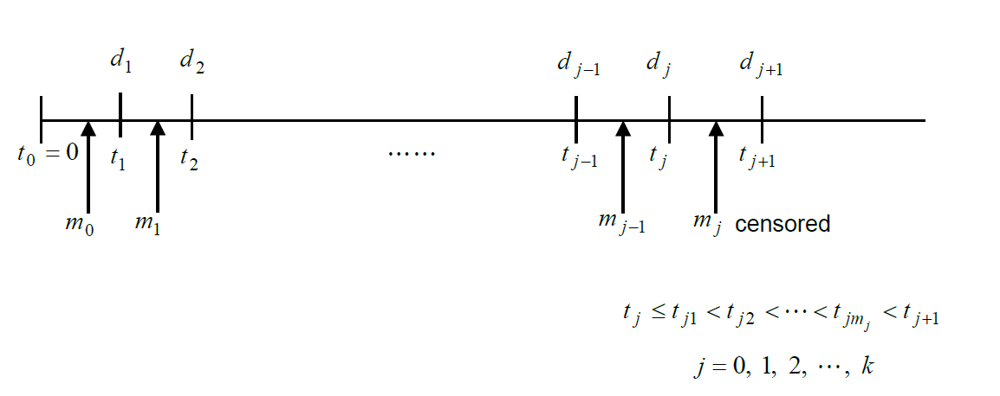
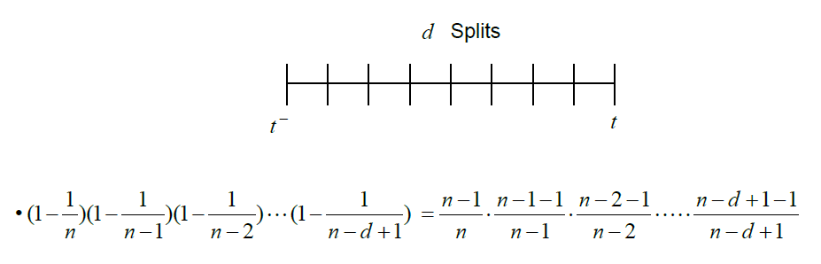
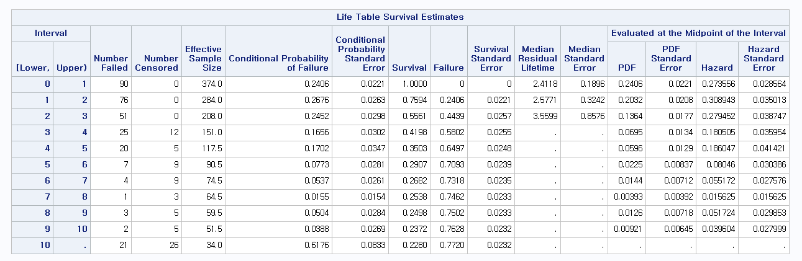
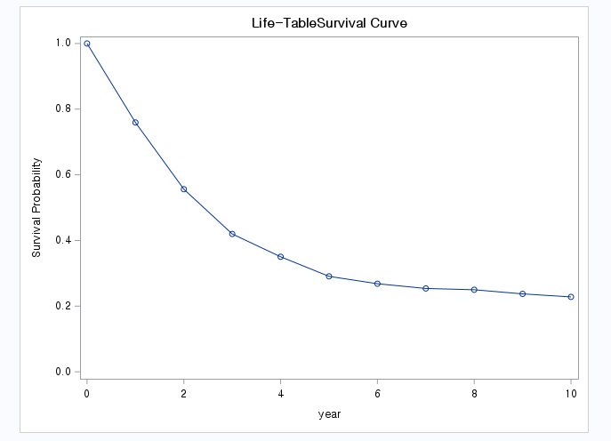

경험적 분포함수를 중단절단자료가 있는 경우로 확장한 방법이 생명표(life table)를 이용한 방법과 누적한계추정법(product-limit method)
생명표 방법은 시간의 단위로 묶어서 생존함수를 추정하며, 누적한계추정법은 환자 개개인의 생존시간을 관측하여 각 시점에서의 생존함수를 추정
2.1 누적한계추정법
생존함수를 추정하는 대표적인 방법 중 하나로 연구자의 이름을 따서 카플란-마이어(Kaplan-Meier) 추정법이라고도 함
Notation
Sample of \(n_0\) from \(F\)\[
0=t_0<t_1<t_2<\cdots <t_k<t_{k+1}=\infty
\] are failure time (uncensored)
\(d_j\) subjects fail at \(t_j\)

# at risk of failure at time just before \(t_j\)\[
n_j=\sum_{i=j}^k(m_i+d_i)
\]
Assume
The censoring time \(t_{jl}\) tells us only that the corresponding failure time is \(>t_{jl}\) (i.e., the contribution to the likelihood of a survival time censored at \(t_{jl}\) is \(P(T>t_{jl})=S(t_{jl}+0))\)
KME is a discrete measure giving mass only to the uncensored observations
KME is step function
- It jumps at death times
- No changes at censored observations
Censoring observations do not contribute to compute \(\hat{\lambda}_j\)
For breaking ties
If a censored observations is tied with an uncensored observation, we consider the censored observations > the uncensored observations
If two uncensored observations or two censored observations are tied then we break them arbitrary by an infinitesimal distance

생존시간 또는 중도절단시간 \(x_1, \ldots, x_n\)을 순서대로 배열한 것을 \(t_1<t_2<\cdots<t_n\)이라 하고 \(\delta_i\)를 생존시간 \(t_i\)의 중도절단여부를 표현. 이때 중도절단인 경우 \(\delta_i=0\), 그렇지 않은 경우 \(\delta_i=1\)
시점 \(t_i\)에서 위험에 노출된 인원수, 즉 \(t_i\) 바로 직전까지 중도절단되지 않고 생존해 있던 인원수를 \(n_i\)라고 하고 사망한 사람의 수를 \(d_i\)라고 했을 때 생존함수 \(S(t)\)의 누적한계추정량은
생존분석은 다른 분석과는 달리 이벤트가 생기지 않은 모든 예에서 정확한 생존기간을 알 수 없기 때문에 모두 중도절단 자료로 취급함. 즉, 연구 종료 시까지 이벤트가 생기지 않고 종료된 경우나 추적실패(follow-up loss) 또는 중도탈락(drop-out)의 경우도 모두 절단된 데이터를 의미
이 데이터에서 time은 숫자로 되어 있으나 생존분석을 위해 중도절단된 자료에는 숫자에 ‘+’를 붙여 중도절단임을 나타내야 함
연구 시작 지점에서 대상환자수(number at risk, n.risk)는 21명이었고 아직 이벤트가 발생하지 않았으므로(n.event=0) 생존율은 21/21=1. 6주째에 3명에게 이벤트가 발생하여 6주째의 n.risk는 21명이고 이 중 이벤트가 발생한 3명을 제외하고 18명이 생존하였음. 따라서 6주째 생존율은 다음과 같음
To get confidence intervals around the survival probabilities, you can do using the OUTSURV=option in the PROC LIFETEST option.
OUTSURV= Data Set
You can specify either the OUTSURV= option in the PROC LIFETEST statement to create an output data set containing the following columns:
any specified BY variables
any specified STRATA variables, their values coming from either their original values or the midpoints of the stratum intervals if endpoints are used to define strata (semi-infinite intervals are labeled by their finite endpoint)
STRATUM, a numeric variable that numbers the strata
the time variable as given in the TIME statement. In the case of the product-limit estimates, it contains the observed failure or censored times. For the life-table estimates, it contains the lower endpoints of the time intervals.
SURVIVAL, a variable containing the survivor function estimates
CONFTYPE, a variable containing the name of the transformation applied to the survival time in the computation of confidence intervals (if the OUT= option is specified in the SURVIVAL statement)
SDF_LCL, a variable containing the lower limits of the pointwise confidence intervals for the survivor function
SDF_UCL, a variable containing the upper limits of the pointwise confidence intervals for the survivor function If the estimation uses the product-limit method, then the data set also contains
CENSOR, an indicator variable that has a value 1 for a censored observation and a value 0 for an event observation If the estimation uses the life-table method, then the data set also contains
MIDPOINT, a variable containing the value of the midpoint of the time interval
PDF, a variable containing the density function estimates
PDF_LCL, a variable containing the lower endpoint of the PDF confidence interval
PDF_UCL, a variable containing the upper endpoint of the PDF confidence interval
HAZARD, a variable containing the hazard estimates
HAZ_LCL, a variable containing the lower endpoint of the hazard confidence interval
HAZ_UCL, a variable containing the upper endpoint of the hazard confidence interval
Each survival function contains an initial observation with the value 1 for the SDF and the value 0 for the time. The output data set contains an observation for each distinct failure time if the product-limit method is used or an observation for each time interval if the life-table method is used. The product-limit survival estimates are defined to be right continuous; that is, the estimates at a given time include the factor for the failure events that occur at that time.
Labels are assigned to all the variables in the output data set except the BY variable and the STRATA variable.
Myelomatosis data
This data gives survival times for 25 patients diagnosed with myelomatosis. These patients were randomly assigned to two drug treatments as indicated by TREAT variable.
DUR: the time in days from the point of randomization to either death or censoring(which could occur either by loss to follow up or termination of the observation).
STATUS: a value of 1 for those who died and 0 for those who were censored
RENAL: indicator variable for normal (1) versus impaired (0) renal functioning at the time of randomization
proc lifetest method=LT plot=(S)graphics
intervals=1,2,3,4,5,6,7,8,9,10;
time year*failure(0);
freq number;
run;


2.3 생존분포 비교
가정
첫 번째 그룹의 생존시간 \(T_{11}, T_{12}, \ldots, T_{1n_1}\)은 서로 독립이며 동일한 생존함수 \(S_1\)을 갖고, 중도절단 시간 \(C_{11}, C_{12}, \ldots, C_{1n_1}\)도 서로 독립이며 동일한 분포함수 \(G_1\)을 가짐
마찬가지로 두 번째 그룹의 생존시간 \(T_{21}, T_{22}, \ldots, T_{2n_2}\)은 서로 독립이며 동일한 생존함수 \(S_2\)을 갖고, 중도절단 시간 \(C_{21}, C_{22}, \ldots, C_{2n_2}\)도 서로 독립이며 동일한 분포함수 \(G_2\)를 가짐
관측값의 형태
그룹 1: \((x_{11},\delta_{11}), (x_{12},\delta_{12}), \ldots, (x_{1n_1},\delta_{1n_1})\)
그룹 2: \((x_{21},\delta_{21}), (x_{22},\delta_{22}), \ldots, (x_{2n_1},\delta_{2n_2})\)
여기서 \(x_{ij}=min(T_{ij},C_{ij})\)이고 \(\delta_{ij}\)는 중도절단을 나타내는 가변수(\(\delta_{ij}=0\): 중도절단)
\(w_i=n_i\)이면 Gehan의 검정통계량이 되며, 이때 가중값은 각 시점에서 위험에 처해 있는 인원수에 비례함
두 그룹의 위험률의 비가 상수일 때 즉, 교차하지 않을 때 로그 순위 검정법이 선호되며, 그렇지 않은 경우에는 다른 가중치를 주는 방법을 선호
\(k(\ge 3)\)개의 그룹이 모두 동일한 생존분포를 가지는지 알아내기 위한 검정법도 존재. 크루스칼-왈리스 검정법을 중도절단자료의 경우로 확장시킨 형태와 유사
2.3.1 Comparison of Survival Curve
Survival curve: \(S_1, \cdots, S_r\)
Compare curve \(S_1, \cdots, S_r\) at \(t=t_0\), \(t\ge 0\)
\[
H_0: S_1(t_0)=S_2(t_0)=\cdots=S_r(t_0)
\]
Comparison of two groups
\[
H_0: S_1(t_0)=S_2(t_0) \,\,\, or \,\,\, \lambda_1 (t)=\lambda_2(t) \,\,\, or \,\,\, p_1(t)=p_2(t)
\]
\(H_0\): the survival times are equally distributed in two groups or there is no difference between survival times of the two group.
Can be tested using the fact taht \(\hat{S}_i(t_0)\) are asymptotically independent with mean \(S_i(t_0)\) ans variance \(\sigma_{\hat{S}_i(t_0)}^2\).
Can use the fact that
\(\sqrt{n}(\hat{S}(t_0)-S(t_0))\sim AN(0, \sigma_{\hat{S}_i(t_0)}^2)\), \(\hat{\sigma}_{\hat{S}_i(t_0)}^2\): Greenwood’s formula
There exists \(\sigma_{\hat{S}_i(t_0)}^2\) such that \(\hat{\sigma}_{\hat{S}_i(t_0)}^2 \rightarrow^p \sigma_{\hat{S}_i(t_0)}^2)\)
\(\hat{S}_1, \hat{S}_2, \cdots, \hat{F}_r\) are mutually independent.
To derive a \(\chi^2\) test of \(H_0\), the data are combined.
Failure times \(t_1<t_2<\cdots <t_k\).
Let \(T_i\) be survival time for an individual in population \(i\).
\(\lambda_{ij}=P(T_i=t_j|T_i\ge t_j)\): Hazard of failure at \(t_j\) or conditional failure probability at \(t_j\), \(i=1, 2, \cdots, r\): population, , \(j=1, 2, \cdots, k\): failure time.
According to the values given to the weight \(w_j\), one obtain different tests.
\(w_j=1, Q=Q_{MH}\): Mantel-Haenszel (1959), log-rank test
\(w_j=n_j, Q=Q_{G}\): Gehan (1965)
\(w_j=\sqrt{n_j}, Q=Q_{TW}\): Tarone and Ware (1977)
\(Q_{MH}\) gives constant weight.
\(Q_G\) tends to weight the early differences more heavily than the last ones.
log-rank test (\(Q_{MH}\))
- gives constant weight to the differences between the two survival experiences at each of the \(J\)death times.
- long term effect or is sensitive to differences in later in times.
- is sensitive to exposures with a constant relative risk (proportional hazards effect).
- is closely related to tests for differences between two groups that are performed within the framework of Cox’s proportional hazards model.
Wilcoxon test (\(Q_G\))
- tends to weight the early differences more heavily than the late ones.
- powerful in detecting the effects of short-term effect or short term risks.
- less sensitive than the log-rank test to differences between groups that occur at later points in time.
- 각 사망시점에서 두 군의 총 대상자수로 가중하여 합하는 것
- 각 시점에서 두 군의 총 대상자는 \(n_j\)이며, 이는 시간이 지남에 따라 줄어듬
- is more powerful than the log-rank test in situations where event times have log-normal distributions with common variance but different means in the two groups.
Tarone and Ware test (\(Q_{TW}\))
- Tarone and Ware (1977) argue that Gehan’s weighting scheme may imply some loss of sensitivity when the distribution of censoring times widely differ in the two groups to be compared.
- In trying to overcome this drawback they suggested their own weights which appear to be a compromise between used by \(Q_{MN}\) and \(Q_G\).
Note
\(\sum_j w_j(d_{1i}-E(d_{1i}))\) is powerless for the case of crossing hazards. (i.e., not particularly good at detecting differences when survival curves cross)
- i.e., they are powerful when one risk is greater than the other at all times.
- Otherwise some terms in this term are positive, and some other terms are negative, then they cancel each other out.
Some cancer treatments are thought to have cured patients within a short time of initiation.
- Then, instead of all patients having the same hazard, the cure model assumes that an unknown proportion (\(1-\pi\)) are still at risk whereas the remaining proportion (\(\pi\)) have essentially no risk.
- If the aim of the study to compare the cure proportion \(\pi\)’s, then neither the generalized Wilcoxon nor log-rank tests are appropriate.
- Then at a time point \(t\) far enough for the curves to leave off, compare the estimated survival rates and compute
Call:
survdiff(formula = Surv(ttr, relapse) ~ grp + strata(ageGroup2),
data = pharmacoSmoking)
N Observed Expected (O-E)^2/E (O-E)^2/V
grp=combination 61 37 49.1 2.99 7.03
grp=patchOnly 64 52 39.9 3.68 7.03
Chisq= 7 on 1 degrees of freedom, p= 0.008
labs=c("Comibnation, age 21-49","Combination, age 50+","patchOnly,age 21-49","patchOnly,age 50+")ggsurvplot(survfit(Surv(ttr,relapse)~grp+strata(ageGroup2), data=pharmacoSmoking), data=pharmacoSmoking,legend=c(0.7,0.85),legend.labs=labs,pval=T)